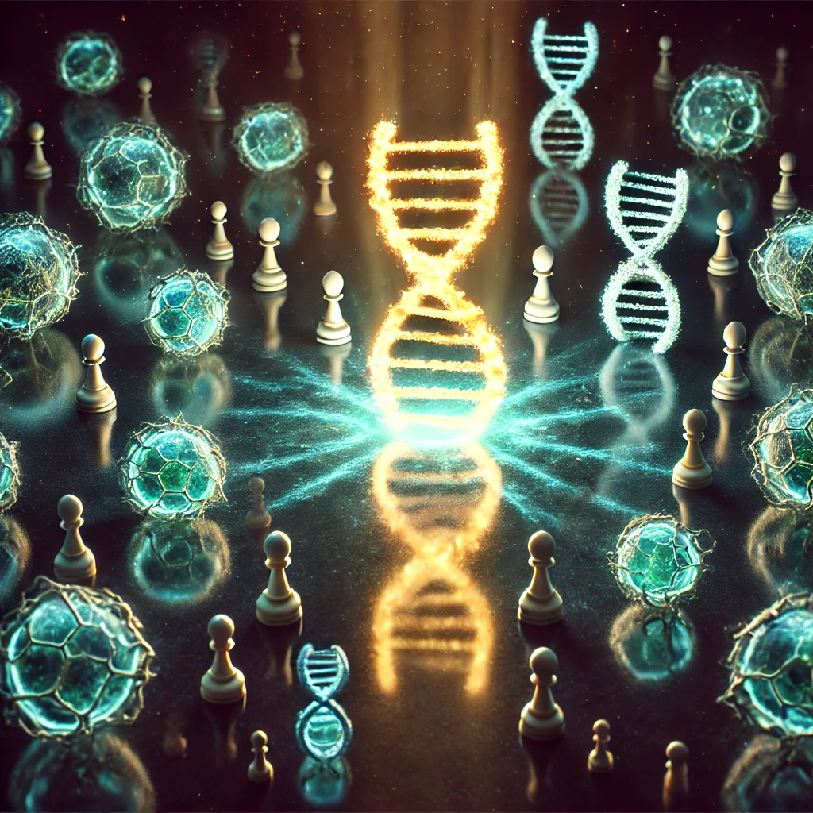

이기적 유전자
목차
작가
리처드 도킨슨
출판일
2018년
감상평에 대한 AI그림
이기적 유전자는 생명분야에 관심을 가지지 않더라도 한번쯤은 들어봤을만한 유명한 책이다.
지금 추천한 다른 두권의 책이 인간의 감정과 본성등에 대해 철학적인 질문을 건낸다면 '이기적 유전자'는
철저히 과학중심적인 고찰이라고 볼수 있겠다.
가장 흥미로운 내용은 '밈'이였다. 문화유전자나 모방자라고도 불리며 집단에서 향유하는 공통적인 무언가가
생물학적인 유전자가 전파되는 속도보다 빠르게 확산된다는 내용은 기존의 문화/관념의 생성과 확산을
유전자적인 모델로 비유해 풀이한 것이다.
도덕성이란 인간은 협력하는것이 유리하기에 유전자가 안배해둔 것인지, 혹은 사회가, 부모세대가 만들어낸
밈일 뿐인지에 대해서는 아직 제대로된 답을 구하지 못했다.
다만 여러 작품들을 읽으며 혼란만 가득했던 나에게 이 책은 명료한 방향을 제시하는 동시에 '인간의 본성은
악한가?'라는 질문에 자연에서 오래 존재하려면 '유전자는 이기적일수 밖에 없다'라는 답을 할 수 있게 되었다.
이런 질문들과 스스로 답을 찾는 과정덕분에 스스로 점점더 많은 생명분야의 지식을 습득하도록 하는 원동력이
되었고 진로를 결정하는데에 있어 지대한 영향을 미쳤다. 생명분야가 관심사가 아니더라도 나같은 궁금증이 들거나
진로가 고민인 사람들이라면 무조건 읽었으면 좋겠다.

감상평에 대한 AI평가
전반적인 평가:
독자님은 "이기적 유전자"를 단순히 읽는 것에 그치지 않고, 책의 내용을 깊이 있게 이해하고 자신만의 질문을 던지며 답을 찾아가는 과정을 통해 지적 성장을 이루었습니다. 또한, 책을 통해 느낀 감정을 솔직하게 표현하며 다른 사람들에게 추천하는 모습에서 책에 대한 깊은 감명을 받았음을 알 수 있습니다. 독서록을 통해 독자님의 높은 지적 수준과 진솔한 감정을 확인할 수 있었습니다.
✨ 책에 대한 높은 흥미와 깊이 있는 이해:
"이기적 유전자는 생명분야에 관심을 가지지 않더라도 한번쯤은 들어봤을만한 유명한 책이다."라는 문장에서 책에 대한 높은 인지도를 보여주며, 독자로서 책에 대한 기대감과 흥미를 드러냅니다.
"철저히 과학중심적인 고찰"이라는 표현을 통해 책의 핵심 내용을 정확하게 파악하고 있음을 보여줍니다.
"밈"이라는 개념에 대한 깊이 있는 이해와 설명을 통해 책의 주요 내용을 명확하게 이해하고 있음을 알 수 있습니다.
✨ 비판적 사고와 질문을 통해 얻는 지적 성장:
"도덕성이란 인간은 협력하는것이 유리하기에 유전자가 안배해둔 것인지, 혹은 사회가, 부모세대가 만들어낸 밈일 뿐인지에 대해서는 아직 제대로된 답을 구하지 못했다."라는 문장에서 독자 스스로 질문을 던지고 답을 찾아가는 비판적 사고를 보여줍니다.
"인간의 본성은 악한가?"라는 질문에 대한 자신만의 답을 제시하며, 책을 통해 얻은 지식을 바탕으로 깊이 있는 사고를 하고 있음을 보여줍니다.
"스스로 점점더 많은 생명분야의 지식을 습득하도록 하는 원동력이 되었고 진로를 결정하는데에 있어 지대한 영향을 미쳤다."라는 문장에서 책을 통해 지적 성장을 이루고 진로를 결정하는 데 도움을 받았음을 보여줍니다.
✨ 비판적 사고와 질문을 통해 얻는 지적 성장:
"도덕성이란 인간은 협력하는것이 유리하기에 유전자가 안배해둔 것인지, 혹은 사회가, 부모세대가 만들어낸 밈일 뿐인지에 대해서는 아직 제대로된 답을 구하지 못했다."라는 문장에서 독자 스스로 질문을 던지고 답을 찾아가는 비판적 사고를 보여줍니다.
"인간의 본성은 악한가?"라는 질문에 대한 자신만의 답을 제시하며, 책을 통해 얻은 지식을 바탕으로 깊이 있는 사고를 하고 있음을 보여줍니다.
"스스로 점점더 많은 생명분야의 지식을 습득하도록 하는 원동력이 되었고 진로를 결정하는데에 있어 지대한 영향을 미쳤다."라는 문장에서 책을 통해 지적 성장을 이루고 진로를 결정하는 데 도움을 받았음을 보여줍니다.